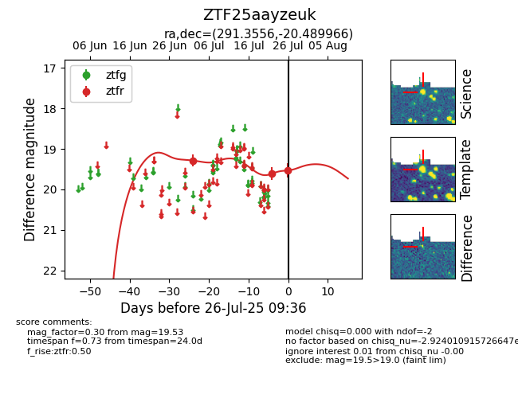

Target ZTF25aayzeuk at 2025-07-26 09:36, see:
FINK: fink-portal.org/ZTF25aayzeuk
Lasair: lasair-ztf.lsst.ac.uk/objects/ZTF25aayzeuk
ALeRCE: alerce.online/object/ZTF25aayzeuk
alt names
ZTF25aayzeuk (ztf,fink)
coordinates:
equatorial (ra, dec) = (291.3556,-20.48997)
galactic (l, b) = (17.9212,-16.42648)
photometry
last ztfr=19.53
3 ztfr detections
